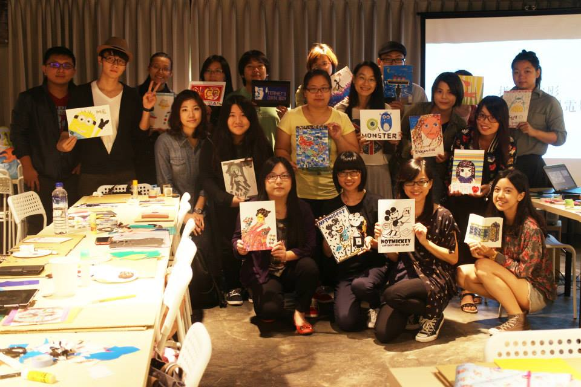

2014-11-04
今年台灣創用CC計畫著力於影音創作領域的推廣，展開一系列的活動。除了創用CC影展座談會、線上影展特別企劃，另外，在10月18日及19日的週末下午，分別舉行了「拼貼電影──當紙膠帶遇見電影」及「紀錄片《網路之子》協力翻譯工坊」，期待透過創作活動和協力翻譯，帶大家體會創用CC的自由文化精神，以及它代表的「混搭、分享、再利用」概念。
用紙膠帶拼貼出電影角色！
10 月 18 日我們榮幸邀請到拼貼藝術家吳芊頤老師，現場為大家演繹示範如何利用紙膠帶和色紙的顏色色塊堆疊及視覺手法，對照原圖，拼貼出一幅唯妙唯肖又有個人創意的再創作作品。

（照片：CC_BY 4.0 台灣創用CC計畫）
為了和今年的推廣主題相呼應，活動的以「電影」為創作主題，讓每位參與活動的朋友們帶來一張參考圖，可能是他們喜歡的電影海報、電影角色、甚至是電影的經典場景。之後再藉由紙膠帶的顏色、花紋，結合色紙剪裁，重新呈現大家心目中的電影。
本場拼貼活動是為了讓大家了解，在生活中、我們展現創意時，經常可能需要運用其他人的作品──相對的，在著作權上也多了討論空間──但是，這並不代表我們的創意就該被拘束！扼殺創意也絕非著作權法的初衷。因此，我們向大家介紹了創用CC授權的精神，鼓勵大家能多運用創用CC素材、也讓自己的一些作品創用CC授權釋出，讓彼此的創意能無限循環。
進行創作期間，我們看見大家展現了各自的創意和巧思，也在會後和我們分享了不同的電影印象。作品中有動畫電影〈神偷奶爸〉中的小小兵、〈怪獸電力公司〉的毛怪和大眼仔等等；也有朋友運用漂亮花紋的紙膠帶，貼出〈惡女花魁〉中華麗的衣裳；還有一位朋友將影展活動的宣傳酷卡圖案，貼成草苺巧克力蛋糕似的可口！
這些精彩作品，可以在計畫Facebook粉絲專頁看到，更多的活動花絮，也會陸續在線上影展平台釋出！
遵循紀錄片創用CC授權規則，協力翻譯繁體中文字幕。
透過一群志工協力參與，於10月19日午後，在摩茲工寮的空間，為紀錄片〈The Internets Own Boy : The Story of Aaron Swartz〉（繁體中譯：網路之子）進行繁體中文翻譯，製作字幕後再以創用CC條款釋出，讓更多人能看見這部紀錄片，並了解其中涵義。

（照片：CC_BY 4.0 吳銘崧）
翻譯工作由每個人認領五分鐘劇情逐句翻譯，全部完成後，再輪流將中文字幕輸入進 Amara 上存檔；進行翻譯時，若大家對特定用詞、專業用語的翻譯方式有建議，也可以在共用的 Google 表單中填寫；全部翻譯完成後，將有人進行統一校對，最後對外發布。簡單來說，紀錄片的翻譯工作必須結合眾人的力量，也因此，利用一個下午的時間我們便完成了初步翻譯。
進行翻譯工作時，因為紀錄片涉及到了法律上、政治上、資訊上的問題，受訪者的言談有許多專業術語或是美國人的口頭用字，當遇上障礙，都會引起現場熱烈的討論，有人上網找資料參考、提供經驗建議……等，氣氛十分活絡輕鬆。

（照片：CC_BY 4.0 吳銘崧）
透過協力翻譯工坊，我們可以體會到網路上資訊龐大，卻有多少是我們能夠吸收的呢？要跨過語言的藩籬，必須有人願意做資源整理、翻譯、提供等工作，同時又要小心著作權的問題。但是，如同本紀錄片所探討：屬於全人類的知識資產，是否該由一個人或私人公司掌握？我們應該付出金錢才能得到這些知識文化嗎？
本紀錄片全部內容，可至我們今年的線上影展策展-Open Video | 自由映象觀賞。

紀錄片為響應了主角亞倫‧史瓦茲生前致力於資訊自由的精神，採用創用 CC 姓名標示-非商業性-相同方式分享 3.0 未移植版授權大眾使用，目前繁體中文字幕正在進行最後統一校正及時間軸校對，也將採取相同的授權條款讓大眾流傳觀看，請大家拭目以待！